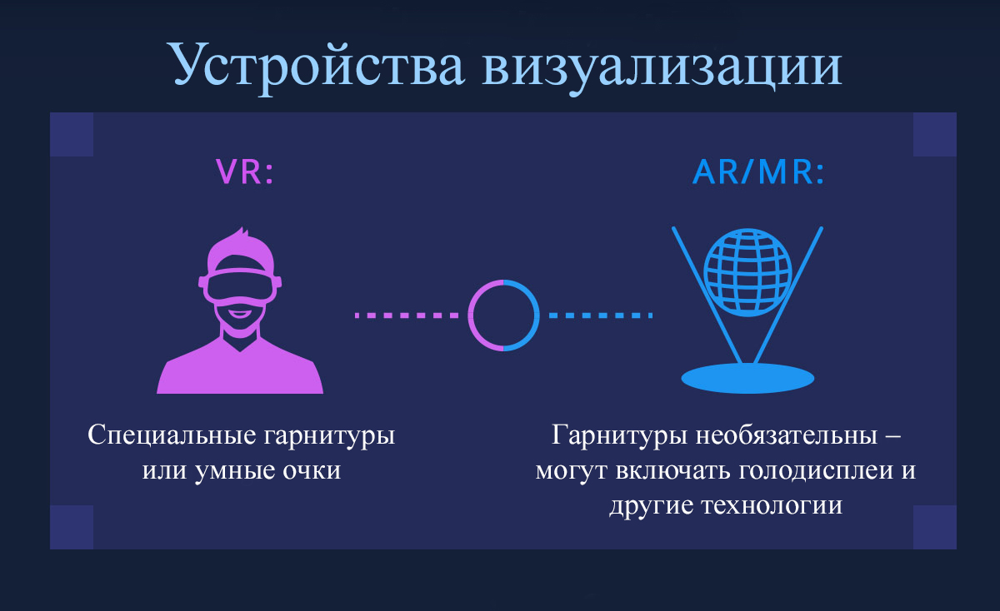
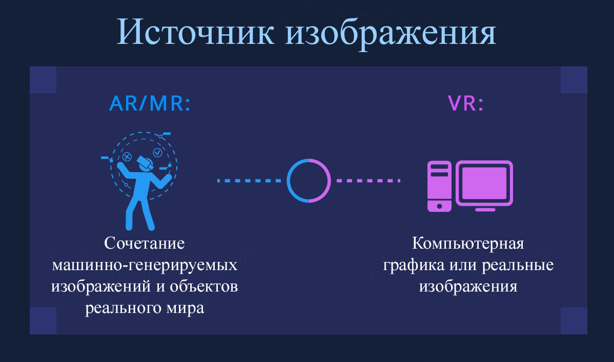
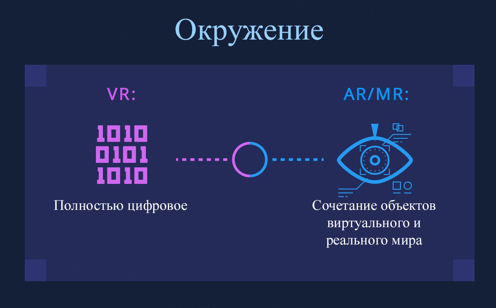
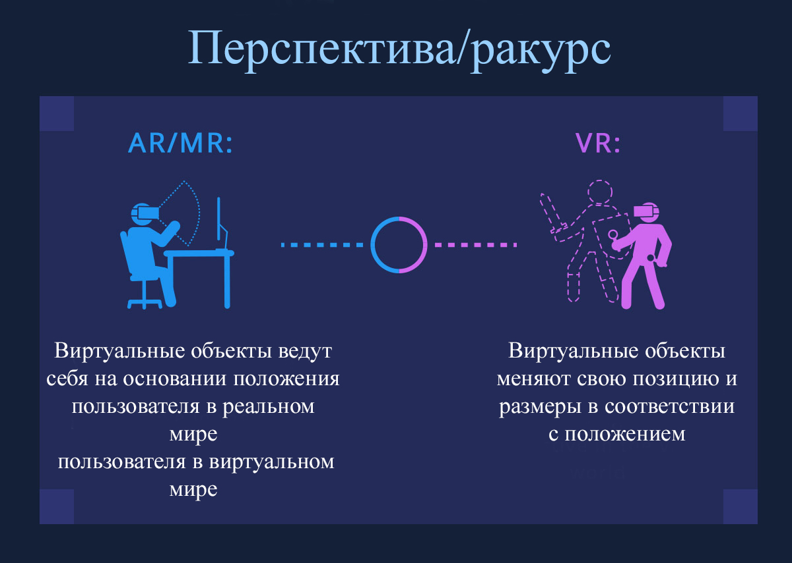
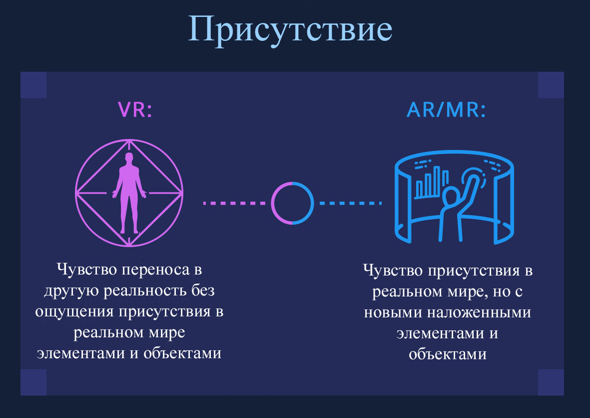
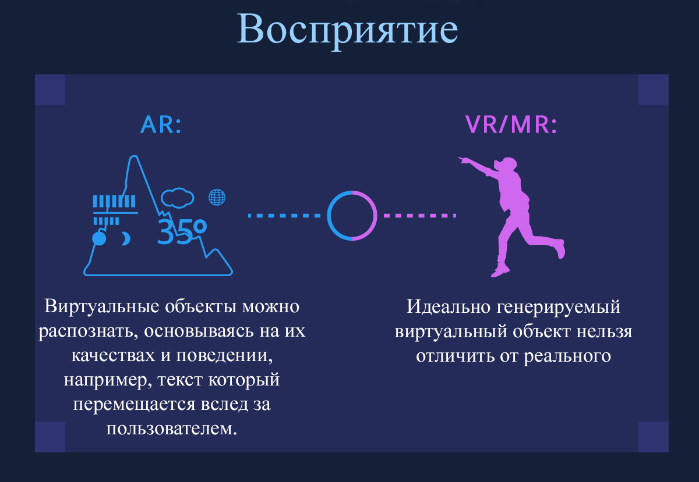
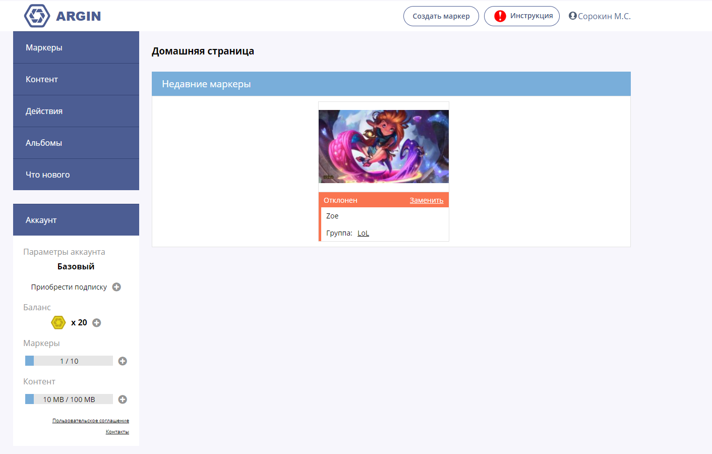

Дополненная реальность – одна из многих технологий взаимодействия человека и компьютера. Ее специфика заключается в том, что она программным образом визуально совмещает два изначально независимых пространства: мир реальных объектов вокруг нас и виртуальный мир, воссозданный на компьютере.
Новая виртуальная среда образуется путем наложения запрограммированных виртуальных объектов поверх видеосигнала с камеры, и становится интерактивной путем использования специальных маркеров.
Дополненная реальность уже много лет используется в медицине, в рекламной отрасли, в военных технологиях, в играх, для мониторинга объектов и в мобильных устройствах.
Основа технологии дополненной реальности – это система оптического трекинга. Это значит, что «глазами» системы становится камера, а «руками» - маркеры. Камера распознает маркеры в реальном мире, «переносит» их в виртуальную среду, накладывает один слой реальности на другой и таким образом создает мир дополненной реальности.
Существуют три основных направления в развитии этой технологии:
Стараясь исключить технологические риски и обойти проблемные моменты, при разработке прототипа программного комплекса, мы остановили свой выбор на надежной и проверенной маркерной технологии дополненной реальности.
Так же, использование маркерной технологии имеет дополнительные преимущества в плане внедрения в методическую часть наглядных печатных материалов, используемых в общеобразовательных учреждениях при изучении конкретной темы и проведении практических работ по ней.
Для работы с технологией дополненной реальности обязательно необходимы следующие компоненты:
Основная задача системы – определить трехмерное положение реальной метки по ее снимку, полученному с помощью камеры. Процесс распознавания происходит поэтапно. Сначала снимается изображение с камеры. Затем программа распознает пятна на каждом кадре видео в поисках заданного шаблона – рамки метки. Поскольку видео передается в формате 2D, то и найденная на кадре рамка метки определяется как 2D контур. Как только камера «находит» в окружающем пространстве рамку, ее следующая задача – определить, что именно изображено внутри рамки. Как только сделан последний шаг, задача системы – построить виртуальную 3D модель в двухмерной системе координат изображения камеры. И привязать ее к метке.
После этого, как бы мы ни передвигали метку в реальном пространстве, виртуальная 3D модель на ней будет точно следовать за движением метки.
К сожалению, маркерная технология, как и любая другая технология, имеет ряд возможных проблем в работе с метками. Бывает, что при движении метки объект может «соскочить» с нее или вовсе исчезнуть с экрана. Это означает, что камера просто перестала «видеть» метку. Есть пять основных причин для этого.
Первое, в чем может заключаться проблема, это освещение. Затемненная зона, слишком яркое направленное освещение, лампа дневного света, светочувствительность камеры, - все эти параметры напрямую влияют на уровень распознавания метки.
Вторая проблема – это расположение реальной метки в пространстве по отношению к камере. Поскольку камера должна четко и целиком видеть рамку метки, она не сможет распознать ее, если метка будет под наклоном или если область рамки будет закрыта, например, рукой. Еще одна причина – слишком быстрое перемещение метки из стороны в сторону. Большинство любительских камер просто не успевает отследить ее перемещения по частоте кадров в секунду и «теряет» метку вместе с моделью.
Если первые две сложности легко устранить, просто следуя инструкции по применению, то есть и третья, более серьезная проблема. Она связана с калибровкой камеры. Калибровка нужна, чтобы построить модель реальной камеры в компьютерном пространстве.
Для того чтобы добавить перспективу и глубину в 2D картинку, которая отображается с камеры на экран, нужно определить параметры перспективной проекции для камеры. Это можно сделать в домашних условиях, используя «шахматную доску» и специальное программное обеспечение.
Еще одна проблема, которая часто относится к web-камерам, - это низкое разрешение камеры. Любительская оптика, тем более встроенные камеры на ноутбуках, как правило, не обладают хорошими объективами с высоким разрешением. Поэтому они дают больше нелинейных искажений и проблем в работе с метками дополненной реальности. Например, если метка будет находиться слишком далеко от камеры или на границе ее видимости, то последняя ее просто «не увидит». Этот вопрос решается покупкой камеры с более высоким разрешением и ее последующей калибровкой.
И последняя проблема – это программное обеспечение. Некоторые алгоритмы распознавания могут иметь ошибки и давать погрешности во время распознавания рамки и «чтения» картинки метки. В этом случае модели могут отображаться некорректно (например, на метке с совой может появиться совсем другой объект) или вовсе исчезать с экрана.
Аппаратная часть, для реализации базовых функций технологии дополненной реальности должна решать 3 основных задачи: получать видеопоток хорошего качества, иметь возможность обработать данный видеопоток и дополнить слоем с виртуальными объектами и, конечно же, вывести обработанные данные на устройства вывода для восприятия конечным пользователем.

Что такое VR, AR и MR? Если в случае с виртуальной реальностью у большинства людей не возникает вопросов, то споры о разнице между AR и MR не утихают до сих пор. Ниже пойдет речь о каждой из реальностей.

Этим термином называют полностью виртуальную реальность, созданную компьютером и воспроизводящую совершенно отличное от реального окружение.

Человек погружается в нее при помощи специальных устройств (чаще всего VR-шлемов) и не может видеть то, что происходит в реальном мире. Благодаря этому создается эффект присутствия в совершенно другом месте.
Простой пример — VR-игры. Пользователь надевает шлем и попадает в иное, виртуальное пространство, с которым и взаимодействует.
В это понятие входят цифровые объекты, отображаемые на носимых устройствах, при этом никак не меняющие внешний мир.

Дополненная реальность не меняет окружение человека, а лишь привносит в него искусственные элементы, вроде информации о погоде или всплывающего перед глазами уведомления о получении e-mail.
Ключевой момент заключается в том, что цифровой контент не прикреплен к пространству.
Такую реальность можно увидеть, надев например Google Glass.
Смешанная реальность — это окружение, которое создано с привязкой к положению в реальном мире. Сосуществование реальных и виртуальных объектов.

В этом случае в мир добавляются виртуальные предметы, которые прикреплены к своему месту в пространстве для того, чтобы смотрящий воспринимал их как реальные.
Например, создание виртуальной висящей на стене картины — это смешанная реальность. Пустая комната, обставленная виртуальным креслом, диваном и торшером — это тоже смешанная реальность.
Суть технологии состоит с том, чтобы привнести виртуальные объекты, выглядящие максимально правдоподобно, в реальный мир.
Максимизация правдоподобности и возможность взаимодействия с виртуальным объектом, «живущим» в реальном мире — ключевые моменты в смешанной реальности.

У перечисленных выше технологий есть сходства и терминологические границы порой могут казаться размытыми, но факт остается: каждой из них присущ свой уровень погружения в виртуальное пространство. Возможно в будущем будет придуман еще один вид реальности.
Проект ARGIN запущен, как Startup в области AR/VR. Мы предлагаем вам сервис, с помощью которого вы сможете предоставить вашим пользователям (клиентам, друзьям, сотрудникам и др.) новые возможности дополненной реальности для печатных материалов (открыток, визиток, журналов, буклетов, плакатов, билетов, флайеров, картин, товарной упаковки и т.д.)! Скачав приложение ARGIN, вы получаете единый универсальный инструмент для взаимодействия с дополненной реальностью. Приложение предоставляет возможность распознавать любую метку, существующую в ARGIN.
